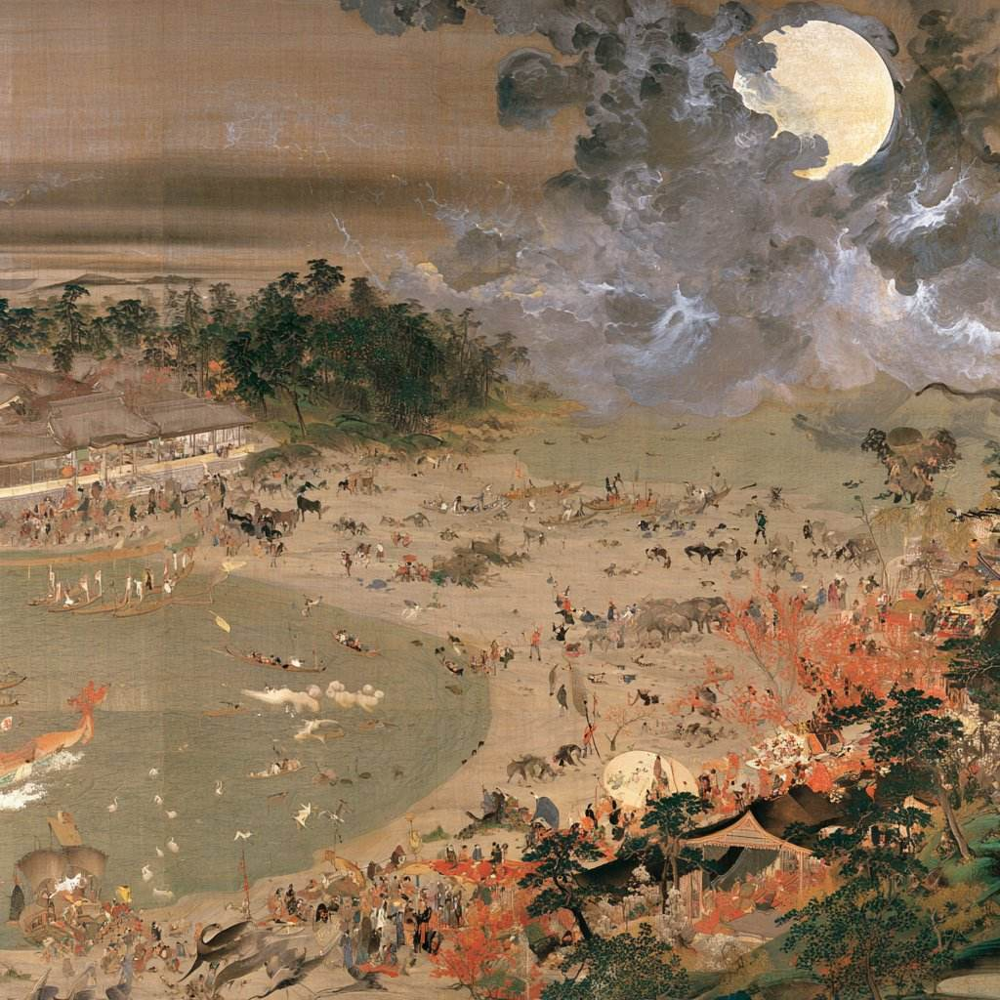
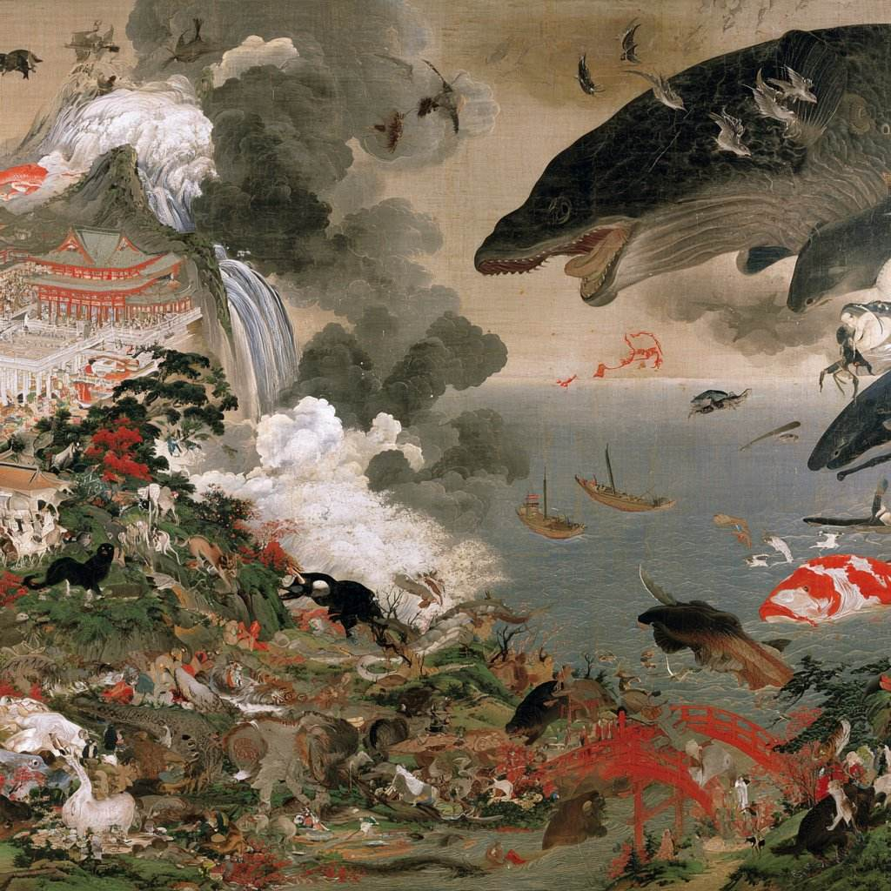

柳田國男は、妖怪と幽霊を区別した。妖怪は場所につく、幽霊は人につく。この線引きだけで、もう十分に面白いと思う。
確認できることと、確認できないことを、はっきり分けて書く。諸説あるものは諸説あると書く。
それが、この台帳の一番の約束事です。
→ 専門的考察を読む
スワイプで他の項目を見る
この台帳を読む前に、知っておいてほしいことがいくつかあります。

登録517体、47都道府県すべてに最低1体以上を収録。都道府県ごとの内訳・検索・絞り込みは、専用の「妖怪マップ」から。
妖怪マップで探す・検索する →ペンネーム、一見坊。金融業界からマーケティングの世界へ活動を広げ、現在もブランドマネージャーなどとして、ブランドづくりや事業づくりに携わっている。2024年からは「あづまねエリアブランディングプロデューサー」として、岩手県紫波郡紫波町の地域づくりにも取り組んでいる。
もともとは登山を通じて、自然を人間とは切り離されたものではなく、文化や暮らしの一部として捉えることに関心を持っていた。そこから妖怪や民間伝承への興味が深まっていった。この妖怪戸籍簿は、その延長にある個人的な調べもの。47都道府県の妖怪をひとつずつ台帳に起こして、確認できたものから記事にしている。妖怪を消費するのではなく、そこに残された土地の記憶を、できるだけ正確に次へ渡していくことを目指している。